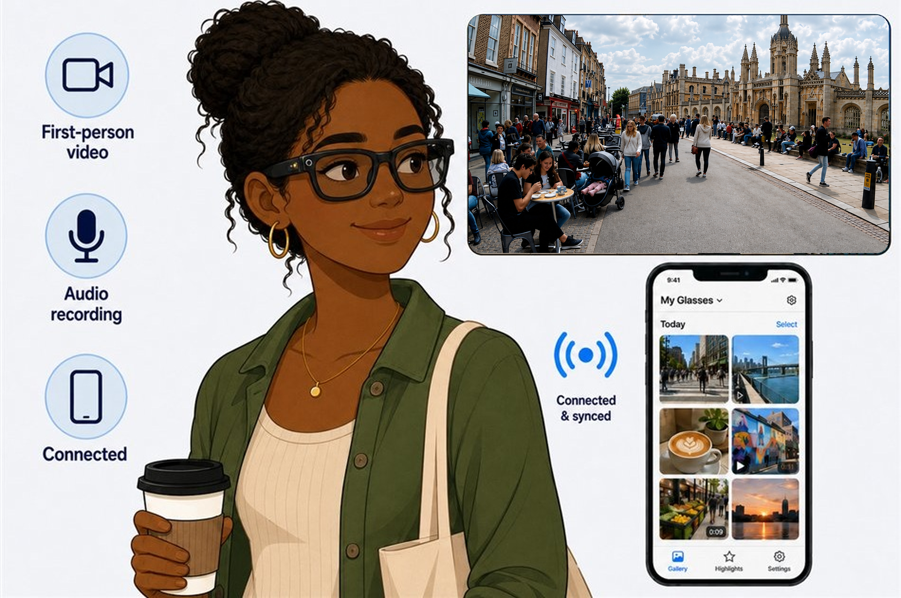

What do you think about smart glasses?
Take part in a 15-minute global academic survey about smart glasses that can record the surrounding environment and where the wearer looks.

Taking part
The survey is open to adults aged 18 and over.
It takes about 15 minutes and asks for your views on possible uses, concerns, and safeguards.
No technical background or previous experience with smart glasses is needed.
Your responses will help build a clearer picture of public expectations around these technologies.
Share your views
Contribute to building an understanding of how smart glasses are perceived, and help inform policies and future developments.
Choose a language. The survey will open in Qualtrics and takes approximately 15 minutes.